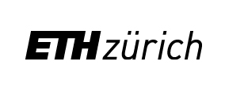

Curriculum Vitae
PostDoc at the Department for Earth, Environmental and Planetary Sciences, Brown University
with Chris Horvart and Baylor Fox-Kemper, 2021-
with Chris Horvart and Baylor Fox-Kemper, 2021-
PostDoc at Scripps Insitution of Oceanograpby, UCSD, 2020-2021
with Nicholas Lutsko
Education
PhD, Scripps Institution of Oceanography, UCSD, San Diego, CA, US, 2015-2020
Physical Oceanography
Physical Oceanography
M.Sc., Swiss Federal Institute of Technology in Zurich, Zurich, CH, 2013-2015
Atmosphere and Climate Sciences
B.Sc., University of Kiel, GEOMAR - Helmholtz Centre for Ocean Research Kiel, Kiel, DE, 2009-2012
Physics of the Earth System - Meteorology, Oceanography and Geophysics
Fellowships
Regents Fellowship, UCSD Fellowship, 2015-2016Studienstiftung des deutschen Volkes (German National Academic Foundation), Fellowship, 2010-2015
Summer Schools
Rossbypalooza - Understanding climate through simple models, University of Chicago, Chicago, June 11th – 22nd 2018
Advanced Climate Dynamics Course 2017, Dynamics of the Seasonal Cycle, Rondane National Park, Norway, September 11th - 22nd 2017
Summer School on fundamental aspects of turbulent flows in climate dynamics Les Houches, Les Houches School of Physics, Les Houches, France, Juli 31 - September 25th 2017
Advanced Climate Dynamics Course 2017, Dynamics of the Seasonal Cycle, Rondane National Park, Norway, September 11th - 22nd 2017
Summer School on fundamental aspects of turbulent flows in climate dynamics Les Houches, Les Houches School of Physics, Les Houches, France, Juli 31 - September 25th 2017
Expeditions & Research Visits
Interdisciplinary School for the blue planet (ISBlue) student mobility grad. July 2019, Ifremer, Brest, France.
Collaboration with Bertrand Chapron, Alexis Mouche, Alex Ayet and Fabrice Ardhuin.
Ross Ice Shelf Vibriation Project. October to December 2016, Mc Murdo and Camp Yesterday. Collecting seismic data from 28 stations array spanning across the Ross Ice Shelf.
Multiple research visits in at GFI Bergen, Norway, 2013, 2015, 2017, 2018 and 2019. Collaboration with Camille Li, Noel Keenlyside and Thomas Spengler.
Ross Ice Shelf Vibriation Project. October to December 2016, Mc Murdo and Camp Yesterday. Collecting seismic data from 28 stations array spanning across the Ross Ice Shelf.
Multiple research visits in at GFI Bergen, Norway, 2013, 2015, 2017, 2018 and 2019. Collaboration with Camille Li, Noel Keenlyside and Thomas Spengler.
Schüler Helfen Leben
I worked for the non-govermantal organisation Schüler Helfen Leben (student helping life) for four years. Schueler Helfen Leben finances projects spanning from human aid to self empowerment and integration of students of different ethnicities. SHL let students and young adults learn and organize the democratic processes including gathering of informations, discussions, decisions and making compromises. It is Germanys biggest non-govermantal, non-profit, independent youth organization writing a slowly growing success story of a youth-based work for children and adolescents. S.A.M.E is the next step on an european level. It was one of the most stimulating periods of my education and will never be expressed in a graded degree.